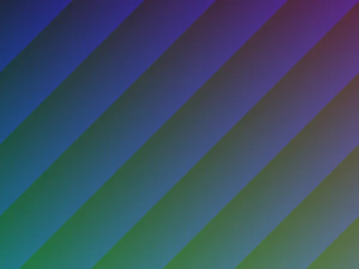
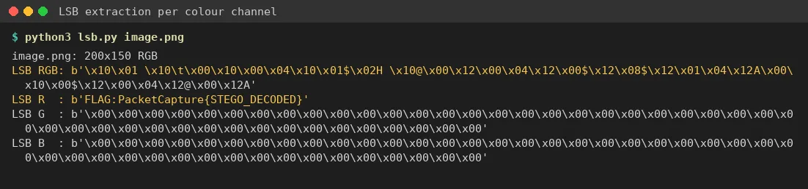

01Start point: a 200x150 PNG of purple/green diagonal stripes.
- What I found: no metadata, no text chunks and no data appended after IEND. The image is a plain smooth gradient.
- Thinking: a plain gradient image with nothing in the file structure usually means LSB (least significant bit) steganography. Changing the last bit of a colour value is invisible to the eye.

02Pivot: LSB extraction per channel.
- What I did: read the lowest bit of each pixel, row by row, and packed every 8 bits into a byte. I tried R, G and B separately and RGB interleaved.
- Result: G and B gave only runs of 0x00/0xFF (no data), and RGB interleaved was noise. The red channel alone gave readable ASCII, terminated by a null byte: FLAG:PacketCapture{STEGO_DECODED}
